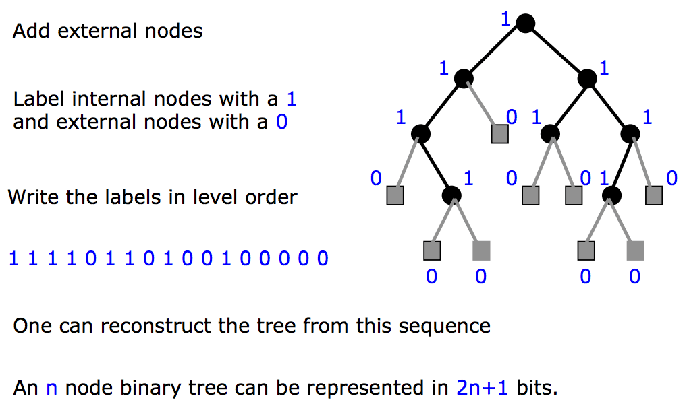
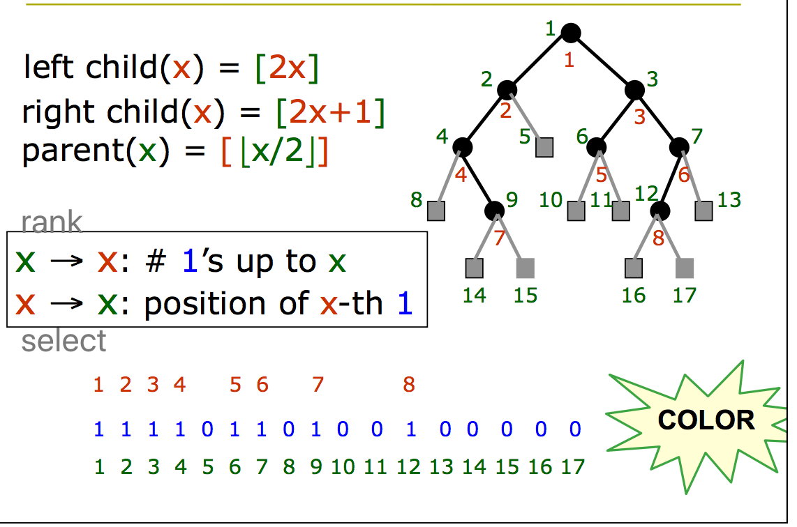
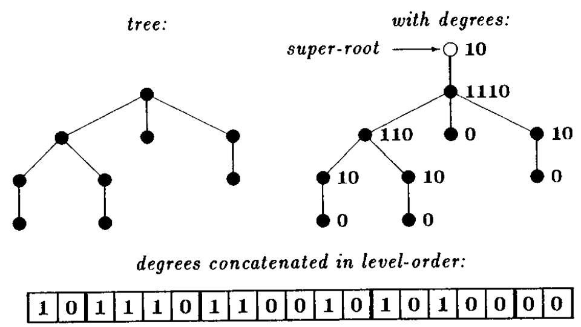
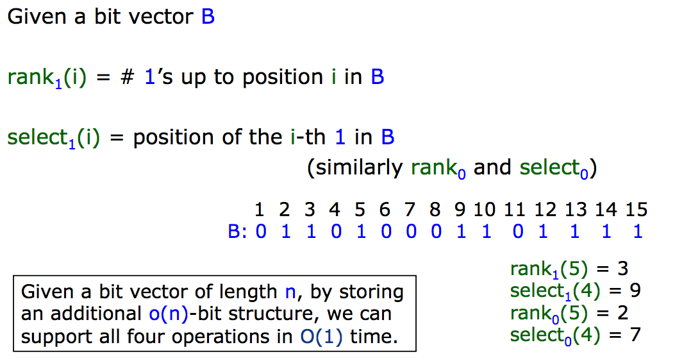
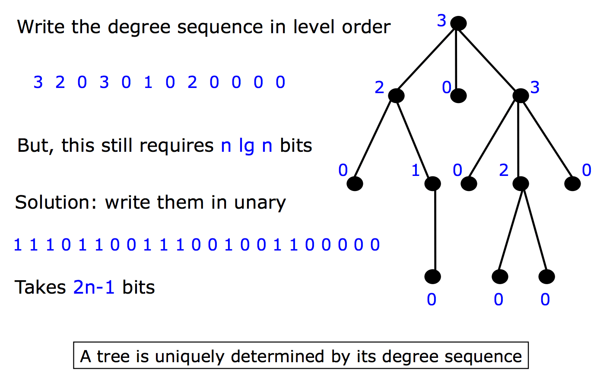
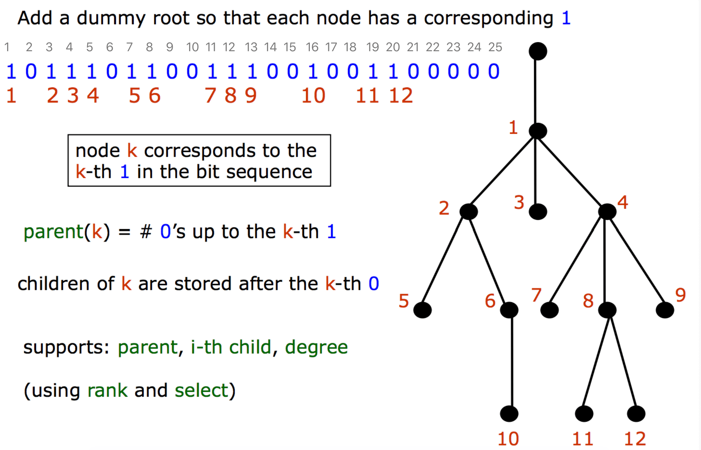
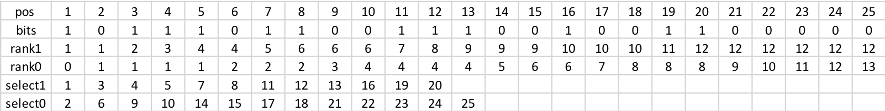

Succinct Data Structure
Succinct: expressed clearly and in a few words. 中文意思就是简洁明了的。首先看一下 wiki 引用对于 succinct data structure 的描述：
In computer science, a succinct data structure is a data structure which uses an amount of space that is “close” to the information-theoretic lower bound, but (unlike other compressed representations) still allows for efficient query operations.
Suppose that Z is the information-theoretical optimal number of bits needed to store some data. A representation of this data is called:
implicit: if it takes Z+O(1) bits of space,succinct: if it takes Z+o(Z) bits of space,compact: if it takes O(Z) bits of space.
For example, a data structure that uses 2Z bits of storage is compact, Z + \sqrt{Z} bits is succinct, Z+lgZ bits is also succinct, and Z+3 bits is implicit.
Succinct Tree
Goal: represent the data in close to optimal space, while supporting the operations efficiently.
这里就要谈到 Jacobson, FOCS ‘89 提出来的方法。
Heap-like notation for a binary tree
结构扩展
首先看二叉树的示例：

对一个二叉树，我们给每一个 leaf node 添加 external node。然后，所有 external node 赋值 0，internal node 赋值 1。按照层序遍历，将所有的值生成一个 bit 序列。我们就使用该序列代表整个树的结构。
那么有了该序列，应该怎样实现树的基本操作呢？诸如：parent, left-children, right-children。

首先给原本的树 internal node 进行编号，编号从 1 开始，层序顺序。这样树的 8 个 node 就被依次编号为 1-8。
然后给所有 node，包括 external node 进行编号，编号从 1 开始，层序遍历。这样 17 个 node 就被依次编号为 1 - 17。
rank & select
1 | R : 1 2 3 4 5 6 7 8 // use r to indicate the index |
这里需要介绍针对该 bit 序列，所需要的两个基本操作：
rank(s): Count the number of element in S less or equal than s.select(i): Find the i-th smallest element in S.
rank(s): 其实就是在 S 序列编号范围 [1,s]，bit 序列中 1 的个数。可以看到，rank(6) = 5, rank(9) = 7。这里可以理解为 S[s] 所在的 1 bit，在 R 中对应的编号。rank 是从S 到 R的映射。select(i): 在 S 序列编号下，在 bit 序列中找到第 i 个 1 所在的编号。可以看到，select(5) = 6, select(7) = 9。这里可以理解成为 R[i] 所在的 1 bit，在 S 中对应的编号。select 是R 到 S的映射。
这两个操作是互补的。可以看到 rank(select(5)) = 5. select(rank(9)) = 9。当然这种互补只对 internal node 成立。对于 external node 是不成立的。比如 external node 11：rank(13) = 8, select(8) = 12。
left, right child and parent
有了 rank 和 select 这两个基本操作，我们就可以在该 bit 序列进行 left child，right child 和 parent 的操作了。
对于 internal node n:
1 | R : 1 2 3 4 5 6 7 8 // use r to indicate the index |
Left Child:
internal node 6 (bit 序列中，第 6 个 1 bit 所在 node, R 中编号为 6 的 node)。
- rank(6.s) = rank(7) = 6
- left-node(6).s = 2 * rank(6.s) = 2 * 6 = 12
- S 编号中，12 对应的 node 是 R 中编号为 8 的 node。
Right Child
internal node 4 (bit 序列中，第 4 个 1 bit 所在 node, R 中编号为 4 的 node)。
- rank(4.s) = rank(4) = 4
- right-node(4).s = 2 * rank(4.s) + 1 = 2 * 4 = 8 + 1 = 9
- S 编号中，9 对应的 node 是 R 中编号为 7 的 node。
Parent
internal node 8 (bit 序列中，第 8 个 1 bit 所在 node, R 中编号为 8 的 node)。
- select(8.r) = select(8) = 12
- parent(8).r = select(8.r) / 2 = 12 / 2 = 6
- R 编号中，6 对应的 node 是 S 中编号为 7 的 node。
Level Order Unary Degree Sequence (LOUDS)
下面对于任意的 tree 进行编码。
首先对已有的 tree 的 root 之上，添加一个 super root。给每个节点编码的方式也很简单：该节点子节点的个数个 “1” 加上一个 “0”。然后按照层序遍历的方式，将这些编码组成一个 bit 序列。




LOUDS 是一个 bit vector。我们需要如下的基本操作
rank1(i)– returns number of ‘1’ in the range [0, i)rank0(i)– returns number of ‘0’ in the range [0, i).rank0(i) = i - rank1(i)select1(rnk)– returns position of rnk-th ‘1’ in the LOUDS string, rnk = 1, 2, 3, …select0(rnk)– returns position of rnk-th ‘0’ in the LOUDS string, rnk = 1, 2, 3, …
这四个基本操作可以在 O(1) 时间复杂度下实现，这个后面我们再聊实现。这些操作可以衍生出下面的对树的操作：
Different ways of tree node numbering for LOUDS are possible, Memoria uses the simplest one. Tree node positions are coded by ‘1’.
node_num = rank1(i)– gets tree node number at position i;i = select1(node_num)– finds position of a node in LOUDS given its number in the tree.
Having this node numbering we can define the following tree navigation operations:
fist_child(i) = select0(rank1(i)) + 1– finds position of the first child for node at the position i;last_child(i) = select0(rank1(i) + 1) - 1– finds position of the last child for node at the position i;parent(i) = select1(rank0(i))– finds position of the parent for the node at the position i;children(i) = last_child(i) - first_child(i)– return number of children for node at the position i;child(i, num) = first_child(i) + num– returns position of num-th child for the node at the position i, num >= 0;is_node(i) = LOUDS[i] == 1 ? true : false– checks if i-th position in tree node.
Note that navigation operations only defined for positions i for those is_leaf(i) == true.

比如我想找 node_num = 8 的 first child 11，last child 12，parent 4：
1 | node_num = 8 |
Reference
Space-efficient Static Trees and Graphs
SuRF: Practical Range Query Filtering with Fast Succinct Tries
Advanced(Algorithmics((6EAP)
Succinct Data Structures
Succinct data structure
Rank and Select Operations on Binary Strings (1974; Elias)
一种神奇的数据结构—小波树
Range minimum query
RRR – A Succinct Rank/Select Index for Bit Vectors